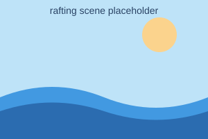
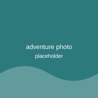
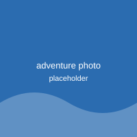
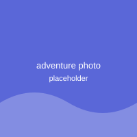
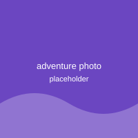

For over two decades, Wild Water Rafting has guided adventurers through some of the most thrilling rapids in the region. Whether you are chasing your first splash of whitewater or you're a seasoned paddler looking for the next big challenge, our experienced guides and top-quality gear keep you safe while you chase the thrill of the river.

Wild Water Rafting
History
Wild Water Rafting was founded in 2001 by a small group of river guides who believed the best classrooms were the ones with no walls. What started as a single raft and a handful of local trips has grown into one of the most trusted rafting outfitters in the region, known for our safety record and our love of the water. Today, our guides are certified in swift-water rescue and wilderness first aid, and we've kept the same values since day one: respect the river, take care of each other, and make sure everyone leaves with a story worth telling.
Adventure Awaits You!



